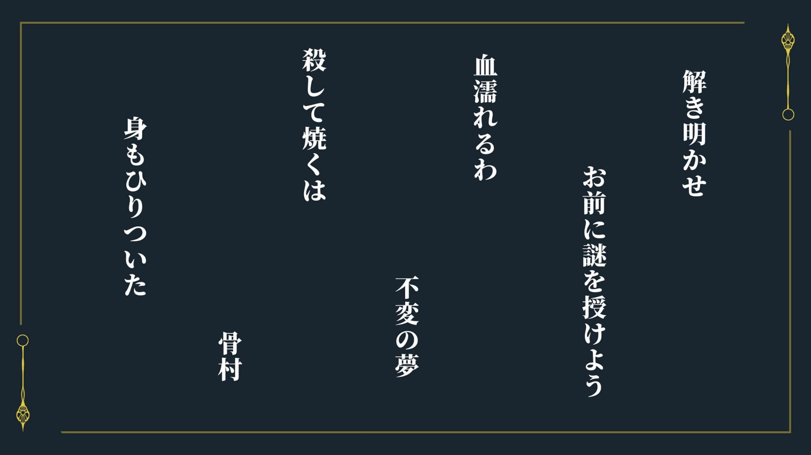

【４の部屋】
中に入れば部屋は歪な形だが、ビジネスホテルのような印象を受ける。また、額が飾られている。
【探索のアイコン】＊４の部屋の窓＊ 詳しく見る
【探索のアイコン】＊詩志麻の手帳＊ 成功したらクリック
【探索のアイコン】＊クローゼット＊
成功したらクリック
【秘密のクローゼット】
あなたたちは好奇心によるものか、はたまた必要にかられてかクローゼットをよく見てみる。
ふと気が付く。クローゼットの底の一部が壁側に押せる（スライドできる）のだ。それは取手がなく普通に使っていれば気が付かないものだろう。
スライドさせれば、そこから壁側へ通じることができそうだが狭い。子供なら通れるかもしれないが、大人では無理だろう。
PLへ
スクリーンパネル一覧から【スクリーンパネルE】と【緑の扉】を表示させてください。
本ファイルではすでに【スクリーンパネルE】の非公開にした画像が表示されています。
【緑の扉】＊＊＊要約
この扉はSIZ８以下のみが通ることが可能
＊入り方＊
・見つけた場所に「再び訪れる」
※クローゼット目星成功した次の探索時間以降に入れる
※見つけた探索時間内は、時間が足りないものとして調べることができない。
・館内地図の上にある【緑の扉】をクリック
・SIZ９以上はお留守番扱い
・再び訪れた際に他の招待客がいた場合は行くことができない

壁の額に目を向けた
詳しく見る
【４の部屋の額】
解き明かせ お前に謎を授けよう
血濡れるわ 不変の夢
殺して焼くは 骨村
身もひりついた

【部屋の額】２ HO：解き明かすもの】のみクリック可能